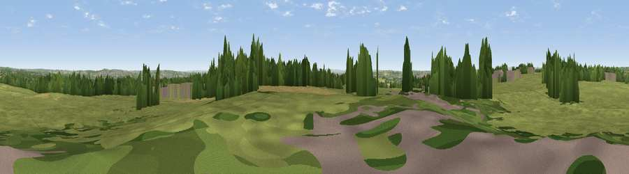

Windmill Hill
#28606 in England · top 46% of its area beats it · near NuthallWhere it is
The exact computed spot (SK 50543 43306). Click the marker for map links.
The view, rendered

A 360° render of this exact spot computed from the terrain model, tree cover and land cover — summer colours, afternoon light, calibrated against photographs of famous viewpoints. Real trees, hedges and buildings will differ in detail.
The panorama
Grey silhouette: terrain skyline in each direction (720 bearings, Earth curvature and refraction included). Dashed green: skyline with trees (+15 m) and buildings (+8 m) as obstacles. Blue strip: how far the ground is visible on each bearing.
Where the view opens
Wedge length = distance to the farthest visible ground on that bearing (vegetation-aware). Rings at 10, 25 and 50 km.
What fills the view
53% grassland · 23% woodland · 15% built-up · 9% cropland
Angular shares of the visible panorama (visual magnitude), not map area. Landscape diversity 0.51 (0–1 Shannon).
Key numbers
More beautiful places nearby
The staircase of upgrades: each row has a higher view potential than everything closer. Driving times are estimates from straight-line distance, calibrated against real road routing — check an actual route before setting out.
| Place | Direction | Drive | Score |
|---|---|---|---|
| Viewpoint near Kimberley | NW · 1 km | ~4 min | 54.8 |
| Viewpoint near Strelley | S · 2 km | ~5 min | 62.6 |
| No Man's Lane | SW · 8 km | ~15 min | 65.8 |
| Viewpoint near Hazelwood | W · 17 km | ~30 min | 66.3 |
| The Tors | NW · 19 km | ~32 min | 68.9 |
| Crich Stand | NW · 20 km | ~34 min | 73.0 |
| Alport Height | WNW · 22 km | ~36 min | 73.9 |
| Viewpoint near Woodhouse Eaves | S · 29 km | ~45 min | 77.7 |
52.98472, -1.24859 · source: dobih hill · position refined by local search. Computed location — check access rights before visiting.